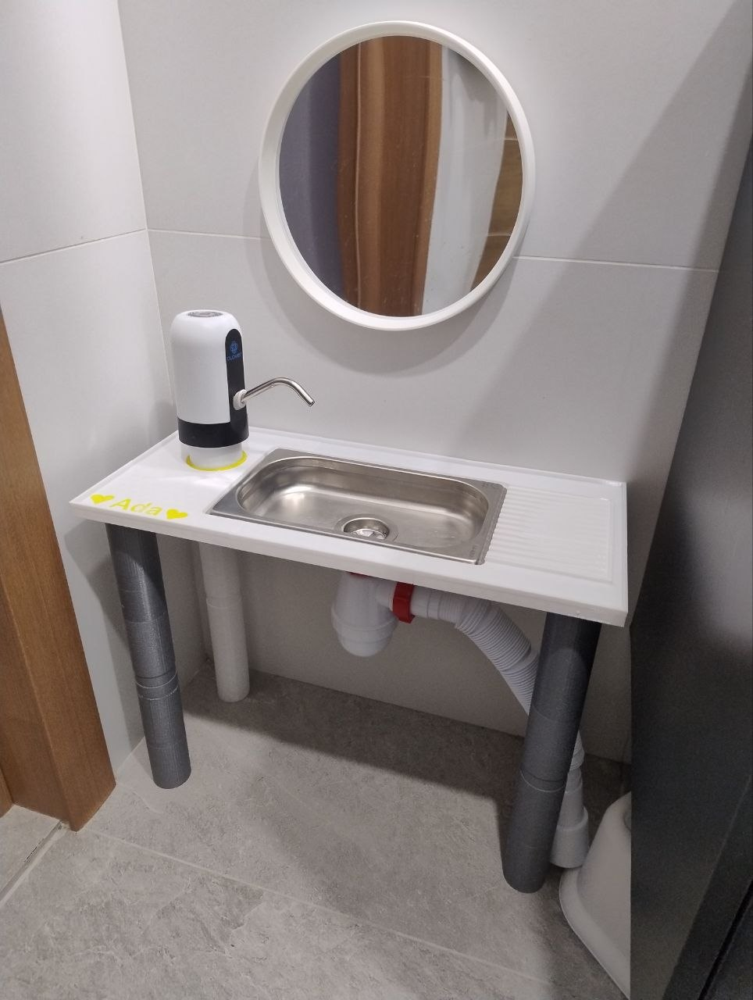
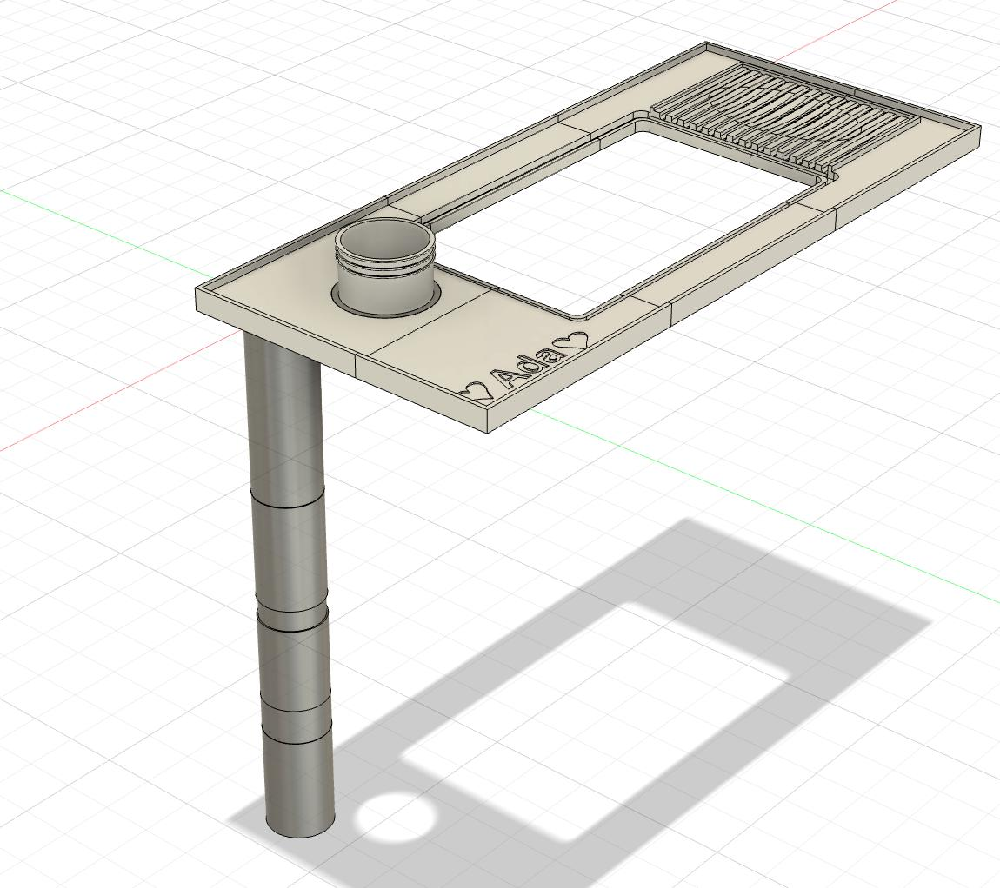
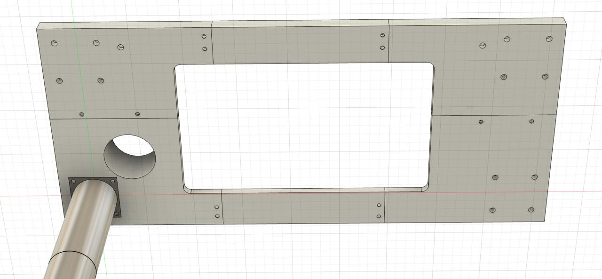
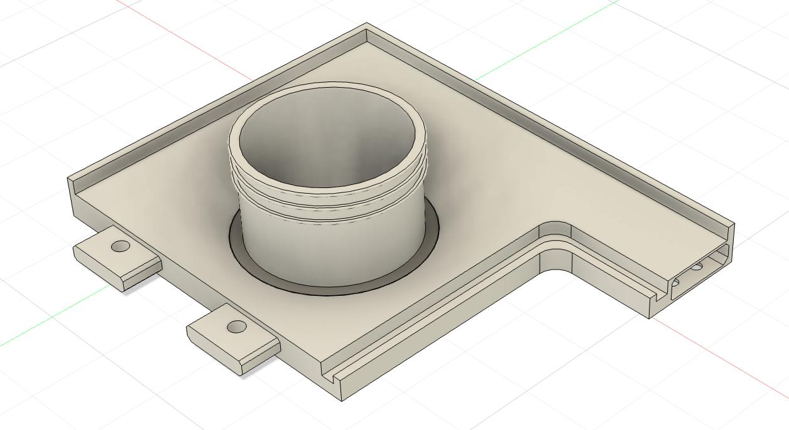
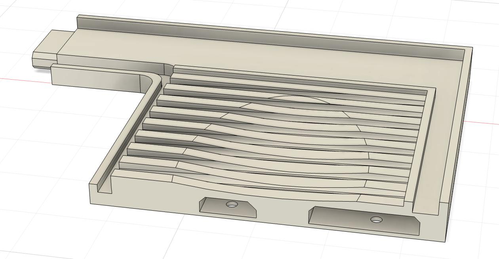
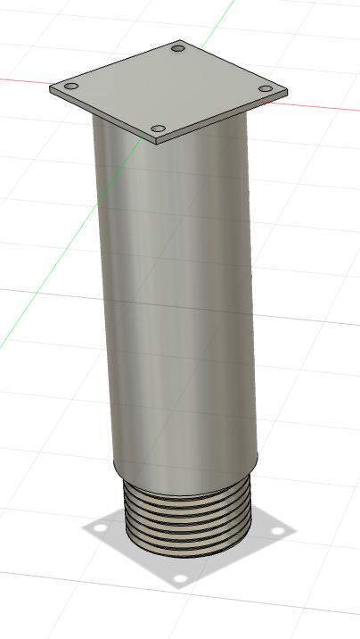
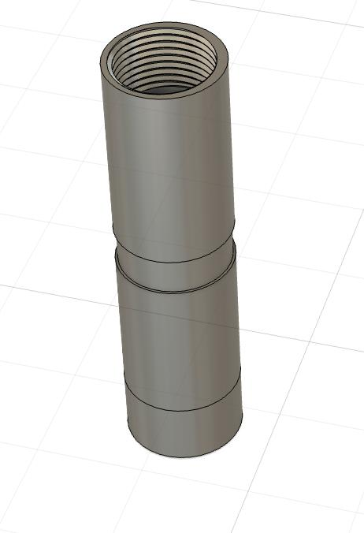
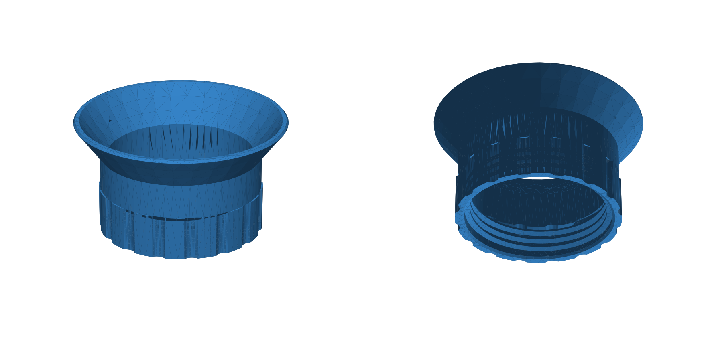

Коли дитині виповнюється рік-півтора, одна з найважливіших навичок за методикою Монтессорі — самостійність у щоденній гігієні: миття рук, чищення зубів, вмивання.
Звичайний дорослий умивальник для дитини не підходить: навіть зі сходинкою дотягтися до крана складно, рівновага хитка, а вода летить на підлогу та рукава. Більшість фабричних рішень на ринку — це або іграшкові пластикові кухні без нормального протоку води, або масивні дерев’яні конструкції, які займають пів кімнати.
Було вирішено спроєктувати та зібрати компактний, повністю автономний дитячий умивальник зі справжньою проточною водою, ідеально адаптований під зріст дитини (~80 см) — змодельований в Autodesk Fusion 360 та повністю надрукований на звичайному 3D-принтері з міцного PETG.

1. Ергономіка та базові обмеження
Ключові параметри, закладені перед проєктуванням:
- Висота стільниці: 390 мм від підлоги (оптимально для дитини зростом 80 см).
- Ширина: 500 мм.
- Глибина: 220 мм. Найважливіше обмеження — невелика глибина, інакше маленькій дитині доводиться лягати животом на стільницю, щоб дістати до води, намочуючи весь одяг.
- Миска: стандартна гастроємність GN 1/4 (262×158 мм, глибина 35 мм) з харчової нержавіючої сталі. Не б’ється, гігієнічна, довговічна та легко миється.
- Захисний бортик: по всьому периметру стільниці передбачено монолітний піднятий край (висотою 8 мм), який запобігає стіканню води на підлогу.
- Похила сушарка: ребриста поверхня праворуч для зубної щітки та чашки, вода з якої стікає прямо в чашу умивальника.
- Персоналізація: на передньому краї стільниці витиснено ім’я (“Ada”).

2. Стільниця з 6 модульних частин та впаяні втулки M4 (Heat Inserts)
Оскільки стільниця розміром 500×220 мм не поміщається в робочу область стандартного 3D-принтера (наприклад, 256×256 мм), її було розбито на 6 модульних взаємозчеплених сегментів (3 спереду і 3 ззаду).

Механічне з’єднання та латунні вставки
- Шип-паз та напрямні замки: сусідні сегменти з’єднуються за допомогою пазів та напрямних виступів із технологічним зазором +0.2 мм, що запобігає зсуву та забезпечує ідеально плаский стик.
- Латунні різьбові вставки (Heat-Set Inserts M4): вкручувати гвинти безпосередньо в надрукований пластик не можна. Усі стики та монтажні майданчики під ніжки оснащені глухими отворами, в які паяльником впаяні латунні різьбові гільзи з насічкою під різьбу M4. Жодних M3 чи саморізів — уніфікація на M4 забезпечує необхідну жорсткість.
- Стягування з нижнього боку: знизу стільниці передбачено спеціальні монтажні кишені, в які входять нержавіючі гвинти M4 під шестигранник, надійно притискаючи сусідні сегменти один до одного.
- Герметизація стиків: перед фінальним стягуванням торці промазані нейтральним санітарним силіконом, що повністю виключає протікання води крізь шви.
| Лівий сегмент під посадку помпи | Правий сегмент із рифленою сушаркою |
|---|---|
 |
 |
3. Модульні різьбові ніжки, надруковані на 3D-принтері
Ніжки умивальника також повністю надруковані на 3D-принтері з PETG і мають модульну різьбову конструкцію:
- Верхній монтажний фланець: квадратна опора на 4 отвори прикручується гвинтами M4 до впаяних латунних вставок знизу стільниці. Знизу вона має велику посилену зовнішню різьбу.
- Подовжувальні різьбові циліндри: порожнисті трубчасті секції ніжок просто нагвинчуються одна на одну. Коли дитина підростає, можна додрукувати нові різьбові секції й підняти стільницю з 390 мм до 460 мм і вище.
| Верхній монтажний фланець | Подовжувальний різьбовий сегмент |
|---|---|
 |
 |
4. Гідравліка та замкнена сантехнічна система
Усі комунікації компактно розміщені під стільницею:
[ Каністра чистої води 5л ] ---> (Сенсорна помпа ViO E11) ---> [ Кран / вилив ]
|
v
[ Каністра зливу 5л (DIN 45) ] <--- (Сифон 1¼" + трубка) <--- [ Чаша з нержавійки ]
Подача води:
- Встановлено електричну акумуляторну помпу ViO E11. Вона працює від внутрішнього літієвого акумулятора, який заряджається через USB-C раз на кілька місяців.
- На стільниці надруковано монолітний скляночний адаптер для помпи, від якого жорстка трубка спускається безпосередньо у бутель чистої води.
- Дитині достатньо лише легкого дотику до сенсора зверху — вода тече, повторний дотик вимикає. Жодних зусиль чи повороту важких кранів.
Злив та воронка DIN 45:
- Під мискою змонтовано компактний сантехнічний сифон 1¼" із фільтром-сіткою.
- Для відведення брудної води в каністру з горловиною DIN 45 у бібліотеці build123d було окремо спроєктовано нарізну воронку (
sink/din45_funnel/). Вона нагвинчується на горло каністри на упорну різьбу KS і герметично утримує зливну трубку, не пропускаючи запахи.

5. Результати та досвід експлуатації
Умивальник став невіддільною частиною щоденного побуту:
- Повна самостійність: дитина сама миє руки після прогулянки та чистить зуби без допомоги й підсаджування.
- Автономність: 5 літрів чистої води вистачає на 4–5 днів активного користування.
- Сухість: завдяки правильній невеликій глибині (22 см) та високим бортикам рукава дитини та підлога залишаються абсолютно сухими.
Просто зробили саме те, що зручно для дитини та підходить під наші розміри у ванній: змоделювали у Fusion 360 та build123d, надрукували — і воно щодня чудово працює.